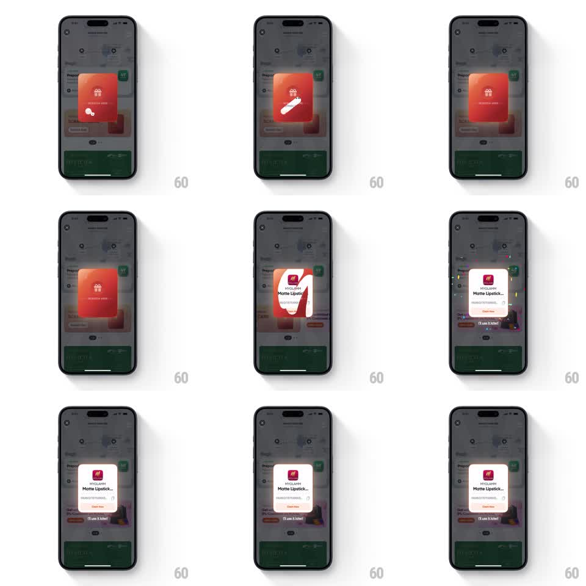

Media
Frame-by-frame

Rebuild this interaction 1:1: Swiggy's scratch card - the user rubs a foil coating off a red gift card to reveal a reward, confetti bursts, and a claim card slides up.

Rebuild this interaction 1:1: Swiggy's scratch card - the user rubs a foil coating off a red gift card to reveal a reward, confetti bursts, and a claim card slides up. ## Integration Integration: stack-agnostic spec - springs given as stiffness/damping, timed motions as duration + curve; map every value to your framework and animation library of choice. ## Scene Dimmed app background with a red rounded card at center: gift icon and "SCRATCH HERE" on the foil. Beneath the foil hides the reward: a white card with the brand logo, "MYGLAMM Matte Lipstick..." text, a code, and a "Claim Now" button, plus an "I'll use it later!" link below. ## Motion spec Pattern: touch-scratched foil reveal with confetti and a slide-up reward. - The card wobbles on entry (rotate +-2deg, 2 cycles, 600ms) to invite scratching. - Scratching tracks the finger 1:1: a ~40pt brush erases the foil (destination-out mask) with a soft edge, revealing the reward underneath in the rubbed path. - At 45% scratched, the rest of the foil dissolves (300ms fade with flaking particles) and the reward card pops (scale 0.94 -> 1.02 -> 1, spring ~300/16). - Confetti bursts from the card (70 pieces, gravity + rotation, 1.8s life, two staggered volleys 150ms apart). - The reward card then slides up slightly (spring ~320/26) as the "Claim Now" button and "I'll use it later!" link fade in beneath it (250ms). ## Calibration - The brush must feel tactile: erase radius follows touch pressure/size, no grid snapping. - Auto-reveal only past the threshold - half-scratched stays scratched. ## Reduced motion Tap-to-reveal: foil fades away (300ms); confetti reduced to a single small burst. ## Don't miss - The foil is a matte red with the gift icon printed on it - scratched areas show the white card, not a gray rub. - Confetti colors pull from the reward brand, not generic rainbow only.